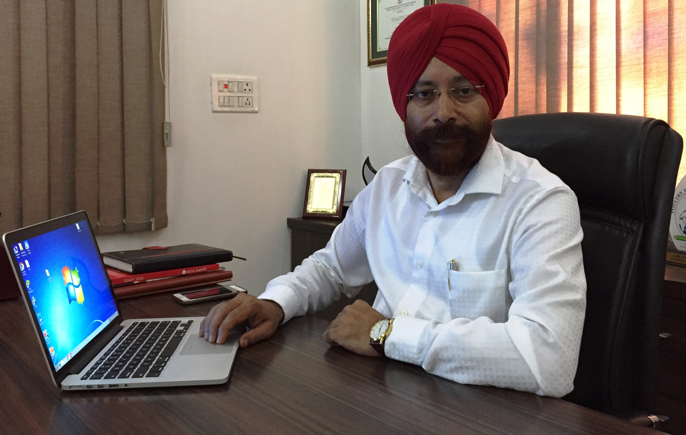
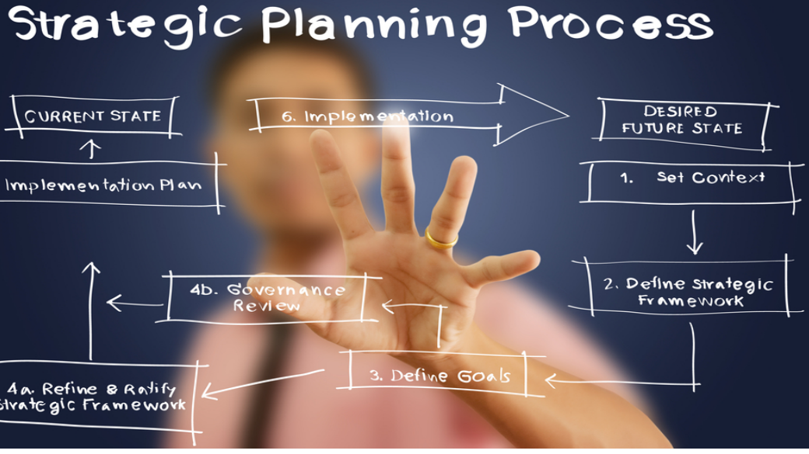

Lark Engineering made a humble beginning in 1989 when it commenced manufacturing agriculture machinery. It was the year 1994 when it entered into Feed machinery market and manufactured its first small 2 H.P. Hammer mill. Over a period the company has come a long way and today we have more than 1500 installations all over the country and abroad which include from a single machine to fully automatically computerized projects.
Due to its commitment to quality and consistent effort in research and development, the company and its technology has received acceptance from a small farmer to big commercial units. Thanks to its innovation approach, the company has applied for two patents in hammer mill and mixer.
The company has been growing leaps and bounds with the active support of our esteemed customers, without which we could not be where we are today.
Today we are focusing on expanding our business in overseas market and while doing so we will continue to strive for customer satisfaction through our quality, competitively priced lines and superior customer service.
Businesses are driven by Leaders. These leaders come with certain Qualities which they bring with them as part of their Heritage, termed as Values. Further, they acquire certain Qualities thru' training, experience and education, termed as Knowledge and Skills.
A combination of these two qualities produce Good Leadership and this drives an Organization.
The work ethics of the organization is highly professional. The Company is run & managed by Qualified Engineers and Technicians who are master in their specific field, whether it is Design and Production or Quality Control.
Lark Engineering Company ( India ) believe in this principle, The Company firmly believes the need to be able to retain Good Talent. "It is easy to recruit Good People but very difficult to retain them."
The Company's present team of Management is thus a blend of these two qualities.
Feed generally is considered to be the major input for livestock, poultry production and may account for 70-80 percent of total production cost. So, if we can produce high quality feed at most economical way, it will not only cut the cost of production, but also yield high profits.
Raw materials are changing, formulations are changing and so are the processes in feed manufacturing.We as plant manufacturers are aware of these facts and in our endeavour to provide you solutions to produce hygienic feeds at economical cost,we have come up with new designs.
Lark has always made strides to offer the best, in grinding; we have the patented models that can outperform to give the required texture suitable for pelleting or mash, fine to course at minimum of 40 % power saving.
Similarly in mixing, we have patented variable cross-section, double ribbon design that can achieve best of mixing in shortest time. In pelleting, if we produce high quality pellets with minimum of power, without or minimum recirculating fines, we will save energy not only for our self but for nation also.


The company plans to retain its position as leader in its field ,we plans to do this by:
Continuously striving towards innovation and up gradation of its Technology in plant and Machine Manufacturing. Constantly up grading its quality standards in Manufacture and Service level. To become self sufficient in latest technology by developing indigenous technology. Developing Business in new markets and countries.
Competing with world leaders in this business to enter their markets and obtain a small but significant share. Lark Engineering Company( India) will , all times devote special attention to the development of its team of Management. and Staff - their growth within and outside the company, their training , their skills and finally their continuous and constant recognition of their on going contribution to the company.
We are committed to provide products & services meeting or exceeding customer's expectations.
Further to the full satisfaction of customers Lark Engineering Company (India) became an ISO 9001:2000 Company, first in its field in India and follows TQM ( Total Quality Management ) for all its products.
In transitiaity the Quality policy into action, we have developed a series of Control & Monitoring Systems which constantly evaluate each step of process, throw up areas of Technological Deficiencies thus highlighting areas for improvements and Up gradation.
In transitiaity the Quality policy into action, we have developed a series of Control & Monitoring Systems which constantly evaluate each step of process, throw up areas of Technological Deficiencies thus highlighting areas for improvements and Up gradation.